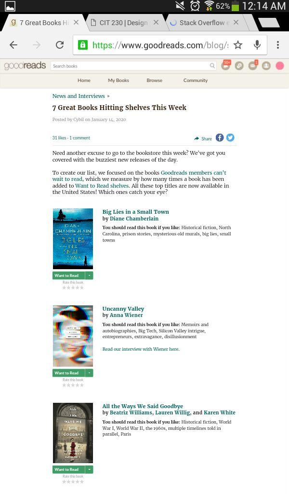

Negative Space
AdidasThe Adidas official website is a good example of usage of negative space or white space. They display the minimal amount of text and elements that draws the user to focus on the products offered by the brand.
PARC: Proximity
Goodreads Proximity is about grouping elements that are related to each other. Goodreads applies the principle of proximity to tie elements together and organize the website's content. It makes it easier for the viewer to understand the content and it also provides a sense of harmony and unity.
PARC: Contrast
CSS-TricksThe use of contrast brings balance. Constrast cause elements to stand out. CSS-Tricks website uses bright colors on text and elements over a dark background, which strategically draws the attention of the viewer to the content.